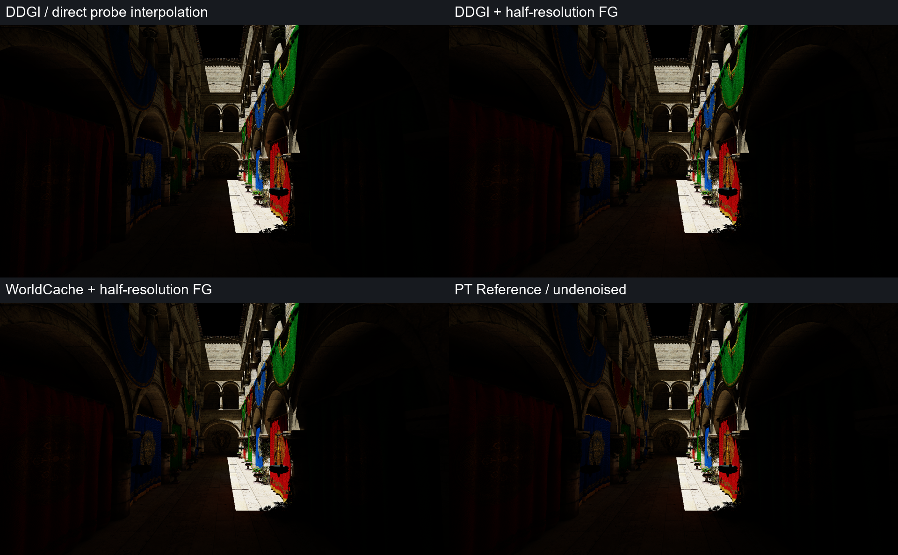
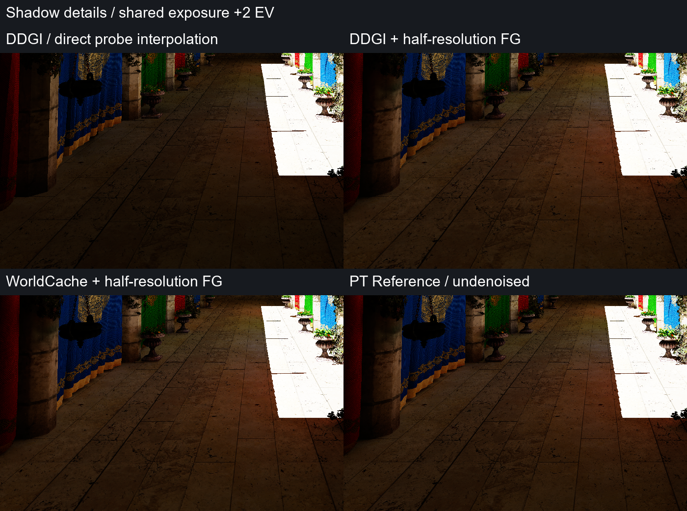
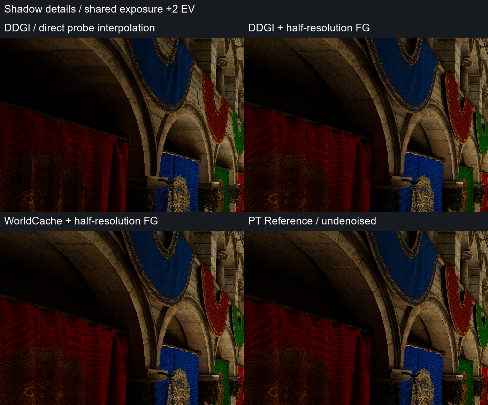

保持原相机位置 (-9,1.6,0)、看向 (8,2.5,0)。关闭 Atrium Point，开启 Atrium Sun，RGB intensity=(50,50,50)，方向沿场景原值 (0.3,-1,0.2)。没有新增环境光或 AO。
四组均为 1920×1080，使用 Accumulate 的 SingleCompensated 累积，静态镜头。DDGI 使用官方 22³ 布局、256 rays/probe、每帧全量更新；两条 FG 均为 960×540，每粗像素每帧一根漫反射射线。WorldCache 参数与上一轮相同：8×8 更新起点下采样、3 跳、history 16、density 20。主命中法线修正开启。ReSTIR、NRD、RTXDI、额外 WRC 复用关闭。
三条 GI 各预热 8192 帧后清空画面历史并累积。PT 为重新渲染的方向光参考，8 spp/帧、最大 31 次表面/漫反射反弹、NEE+MIS、关闭 RR，不降噪。没有复用点光源 PT。最终图均通过一次累积翻倍检查（GI 至少累积 2048 帧）：线性 RGB RMS 变化/自身 RGB RMS <0.1%，统一显示映射后平均绝对变化 <0.25/255、99 百分位 <2/255。该判据表示静态画面实用稳定，不保证每个像素零噪声。
原图统一曝光 -2.3268 EV、ACES fitted＋sRGB。局部图仅统一额外提亮 2 EV，不单独调整某个算法；亮部会更容易饱和，局部图用于观察阴影区。GBuffer 法线逐像素一致，确认相机与可见几何一致。

1080p 单图：原生 DDGI · DDGI＋半 FG · WorldCache＋半 FG · PT Reference
本次 DDGI＋FG 的线性 MSE 最低，WorldCache＋FG 的 HDR-FLIP 最低；两个指标对亮暗区域的权重不同，不能据此声称某条路径在每个位置都更准确。
流程说明：最初要求连续两次翻倍均稳定，导致 PT 额外运行较久。在 65536 spp 已通过全部数值阈值后，采用已保存的该参考图，停止继续等待第二次翻倍。GI 改为至少累积 2048 帧并通过一次翻倍检查，阈值不变；原生 DDGI 最终 2048 帧，两条 FG 最终各 16384 帧。所有图像都未经 NRD 降噪。


| 方案 | 累积帧数 | 累计 spp / FG 粗像素样本数 | 尾段相对 RGB RMS | 显示平均变化 /255 | 显示 P99 变化 /255 | MSE 对 PT | HDR-FLIP 对 PT |
|---|---|---|---|---|---|---|---|
| 原生 DDGI | 2048 | 2048 | 0.023% | 0.0149 | 0.1641 | 0.0005379164647027007 | 0.4104345142841339 |
| DDGI＋半分辨率 FG | 16384 | 16384 | 0.083% | 0.0582 | 0.5645 | 7.404326136129056e-05 | 0.1743319034576416 |
| WorldCache＋半分辨率 FG | 16384 | 16384 | 0.075% | 0.0535 | 0.5095 | 0.0001058650400300598 | 0.14169809222221375 |
| PT Reference（未经降噪） | 8192 | 65536 | 0.092% | 0.0692 | 0.6194 | — | — |
原生 DDGI 不从像素发射 FG，表中其样本数只表示累积帧数。MSE 使用可见表面 mask 内线性 HDR RGB；HDR-FLIP 使用共同曝光范围、ACES、PPD 67。完整配置和数据。